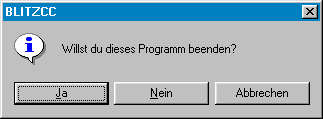

Hilfe
Proceed

Aufruf
Parameter
Rückgabewert
Beschreibung
Wurde auf JA geklickt, dann wird 1 zurückgeliefert.
Wurde auf NEIN geklickt, dann wird 0 zurückgeliefert.
Wurde auf ABBRECHEN geklickt, dann wird -1 zurückgeliefert.
Beispiel
Siehe auch
wert = Proceed (nachricht$ [,warnung])
Parameter
| Nachricht | Text, der ausgegeben werden soll |
| Warnung |
0=Information (Standard)
1=Warnung |
Rückgabewert
1=Klick auf JA
0=Klick auf NEIN
-1=Klick auf ABBRECHEN
Beschreibung
Die Anweisung Proceed blendet eine Nachricht ein, die 3 Buttons enthält: JA, NEIN, ABBRECHEN. Gebe dazu einfach einen Text ein. Zeilenumbruch kann mit CHR$(13) erfolgen. Wird Warnung auf 1 gesetzt, dann erscheint ein Warnsymbol statt Infosymbol.

Wurde auf JA geklickt, dann wird 1 zurückgeliefert.
Wurde auf NEIN geklickt, dann wird 0 zurückgeliefert.
Wurde auf ABBRECHEN geklickt, dann wird -1 zurückgeliefert.
Mit Apptitle kann der Fenstertitel geändert werden
kann der Fenstertitel geändert werden
kann der Fenstertitel geändert werdenBeispiel
Zeigt Proceed-Dialog und verarbeitet die Aktion:
answ = Proceed("Willst du dieses Programm beenden?")
Select answ
Case 0: Notify "Dann mache ich es selbst"
Case 1: Notify "Schade"
Case -1:Notify "Was willst du abbrechen?"
End Select
End
Select answ
Case 0: Notify "Dann mache ich es selbst"
Case 1: Notify "Schade"
Case -1:Notify "Was willst du abbrechen?"
End Select
End
Siehe auch
Confirm, Notify, RequestColor, RequestFile, RequestFont, RequestDir